Major male exercise GIFs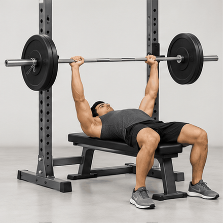
Olympic Barbell Flat Bench Press
EX0001
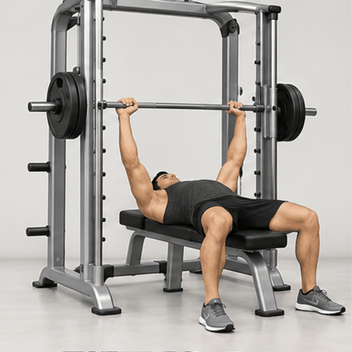
Smith Machine Flat Bench Press
EX0003
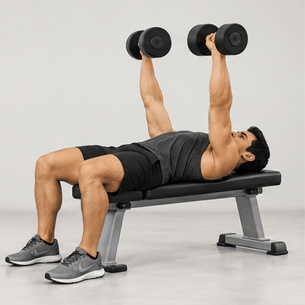
Dumbbell Flat Bench Press
EX0005
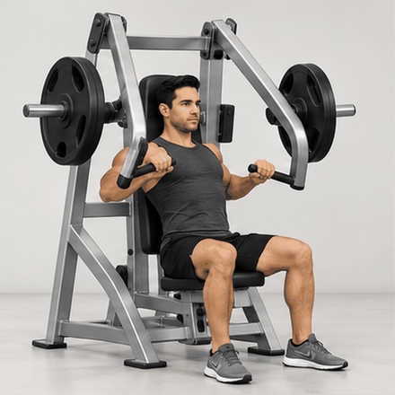
Plate-Loaded Chest Press
EX0009
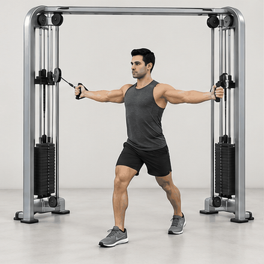
Cable Chest Fly
EX0014
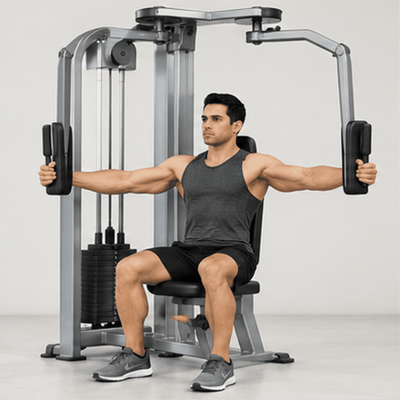
Pec Deck Fly
EX0019
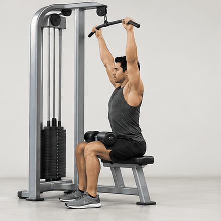
Standard Lat Pulldown
EX0026
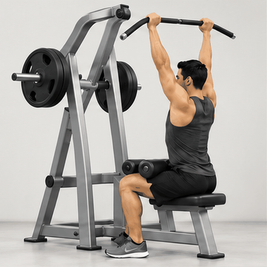
Plate-Loaded Lat Pulldown
EX0032
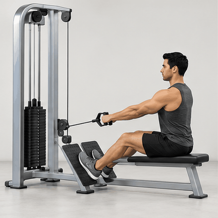
Seated Low Cable Row
EX0035
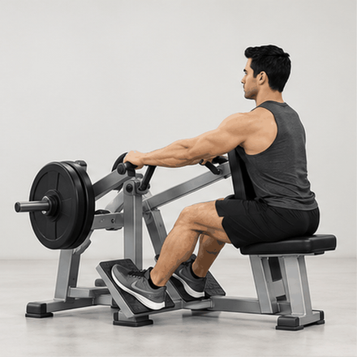
Plate-Loaded Seated Row
EX0039
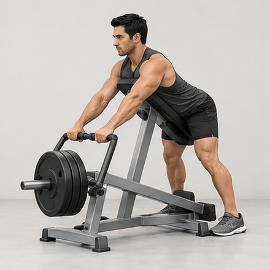
Chest-Supported T-Bar Row
EX0042
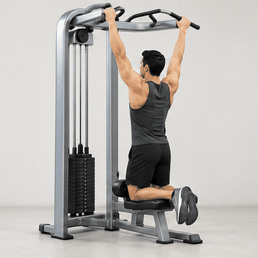
Assisted Pull-Up
EX0051
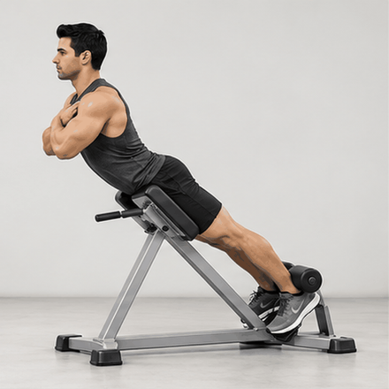
45-Degree Hyperextension
EX0059
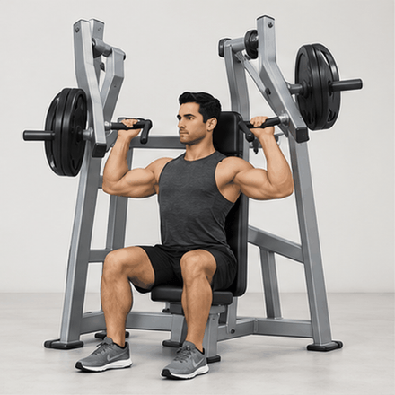
Plate-Loaded Shoulder Press
EX0061
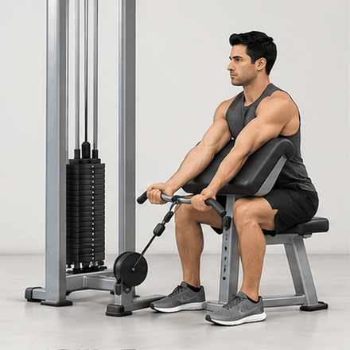
Preacher Biceps Curl
EX0092
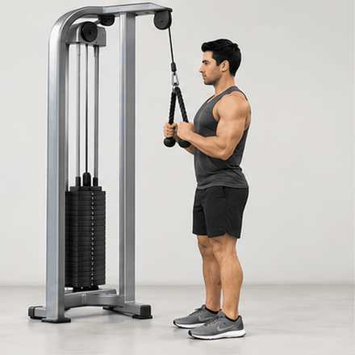
Rope Triceps Pushdown
EX0111
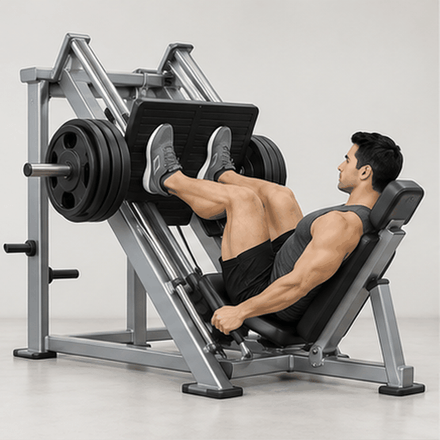
45-Degree Leg Press
EX0127
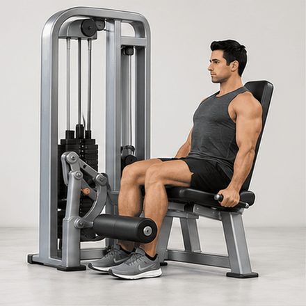
Seated Leg Extension
EX0133
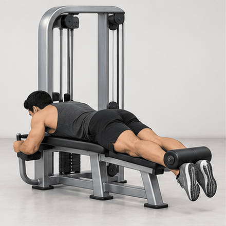
Prone Lying Leg Curl
EX0155
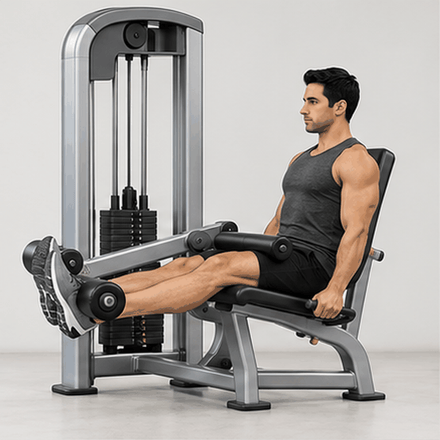
Seated Leg Curl
EX0156
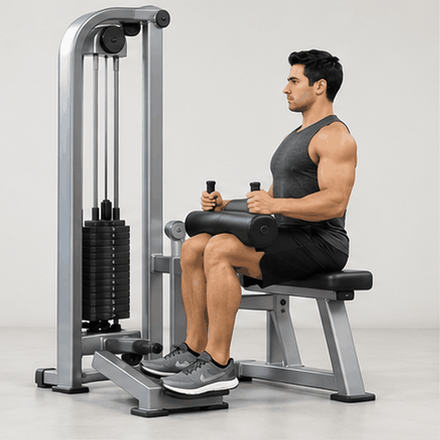
Seated Calf Raise
EX0189
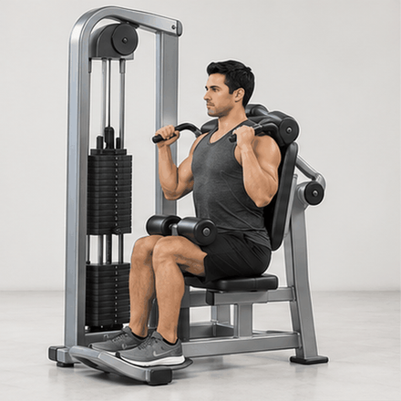
Abdominal Crunch Machine
EX0198
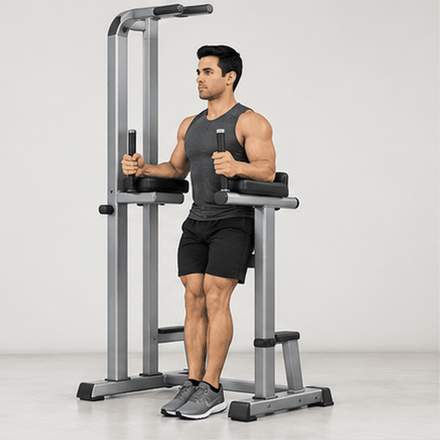
Captain's Chair Knee Raise
EX0206
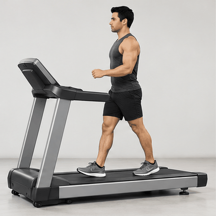
Normal Walking
EX0286
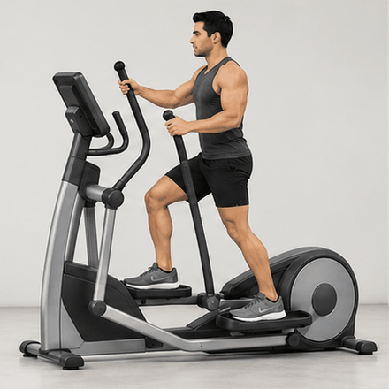
Forward Elliptical Training
EX0295
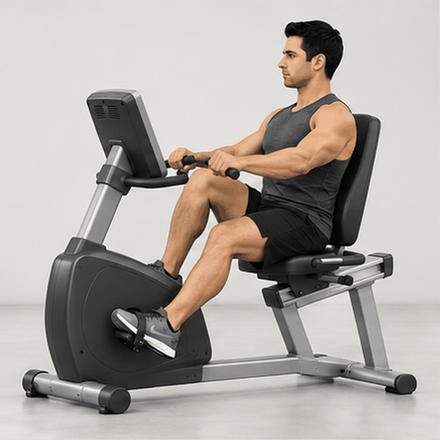
Steady Cycling
EX0301
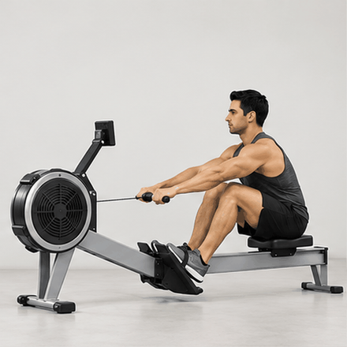
Standard Indoor Rowing
EX0307